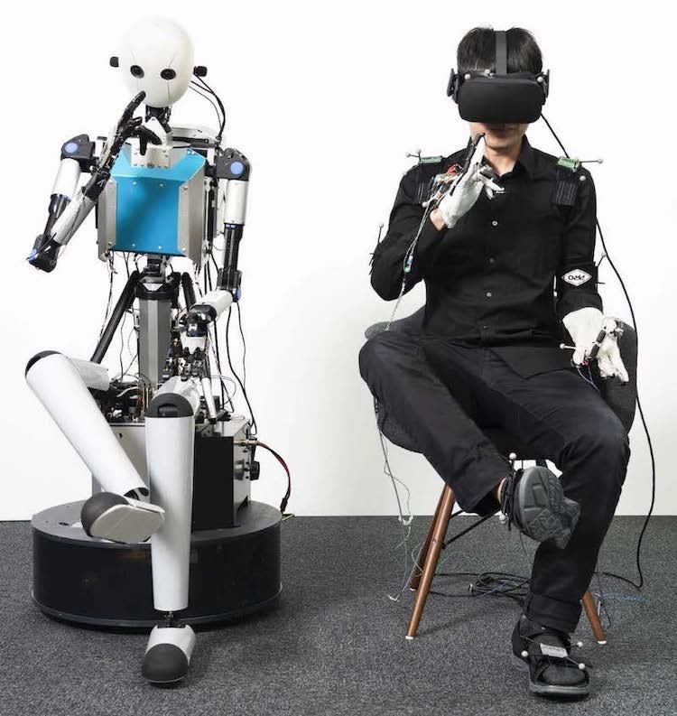

Dromos
Today, the robotics industry has a data problem. The robotics foundation model labs have approximately five orders of magnitude less data to train on than the language model labs.
Today, humans have an embodiment problem. Every person gets one body in one location. It is hard to transport this body and even harder to change its shape. In 2025, we collectively spent eight trillion dollars on both of these things.
The solution to both of these problems is a worldwide telexistence network.
Imagine a human being on one end equipped with audiovisual and haptic feedback equipment (a VR headset and gloves, for example). They are connected over the global network to a humanoid robot at a remote location. With low latency and extensive sensory feedback, they will gain a feeling of presence at the remote location almost indistinguishable from truly being there.

This gives human beings a solution to their embodiment problem:
- They can be anywhere, instantaneously. Any location where a robot is connected to the network is available for them to ‘transport’ to. The end user no longer has to face the limits of geography.
- They can take on any embodiment. Speed, strength, and other desirable physical traits can be engineered into the robotic avatars depending on user preference. The end user no longer has to be beholden to the limits of their body.
This gives the robotics community a solution to their data problem. Rich sensorimotor and proprioceptive data can be collected from this network and used for training robotics foundation models. This would be the internet scale corpus for robotics.
Our goal at Dromos is to create the telexistence network. This has three components:
- Making sensory feedback equipment available to end users.
- Creating a networking solution for worldwide low-latency teleoperation.
- Placing desirable robotic bodies at locations of interest.
We believe a body should be something you choose, and the world should be one place. Dromos exists to make that true.